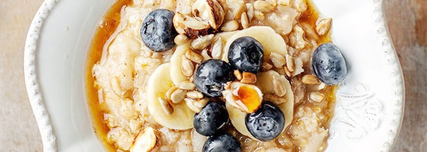

Breakfast Porridge

Descrption
Porridge can be cooked in plain cow's milk or plant-based milk (drink). In the dietary version, you can use water and, after cooking, mix it with natural yoghurt.
Porridge can be sweetened with sugar, honey or maple syrup. Additives, such as nuts and seasonal fruit, play an important role. Try to sprinkle your porridge with maple syrup and citrus juice!
In the off-season, we can use frozen fruit, e.g. raspberries or various types of fruit preserves, for fresh berries. In winter, we can try exotic fruits such as banana, orange, mango and passion fruit.
Ingredients
- 1 cup of oatmeal (plain, mountain)
- 3 cups of milk (regular, vegetable or water)
- 3 tablespoons of sugar (or to taste) or vanilla sugar
Toppings on top, e.g.
- maple syrup or honey or cane sugar
- cinnamon
- walnuts or pecans
- seasonal or exotic fruits (raspberries, blueberries, blueberries, banana, mango, passion fruit, apple, oranges)
- citrus juice
Steps
- Pour oatmeal into the pot, fill the pot with cold tap water, then drain the cloudy water together with the remains of hard shells collected on top.
- Pour the drained flakes with milk (or a mixture of water and milk), add a little salt and sugar or vanilla sugar. Boil everything.
- Reduce heat and cook until tender for about 15 minutes, stirring constantly. Initially, the porridge will be thinner, it will thicken over time.
- Serve with your favorite toppings, such as cane sugar or maple syrup, fruit, nuts.
Back to Recipe list